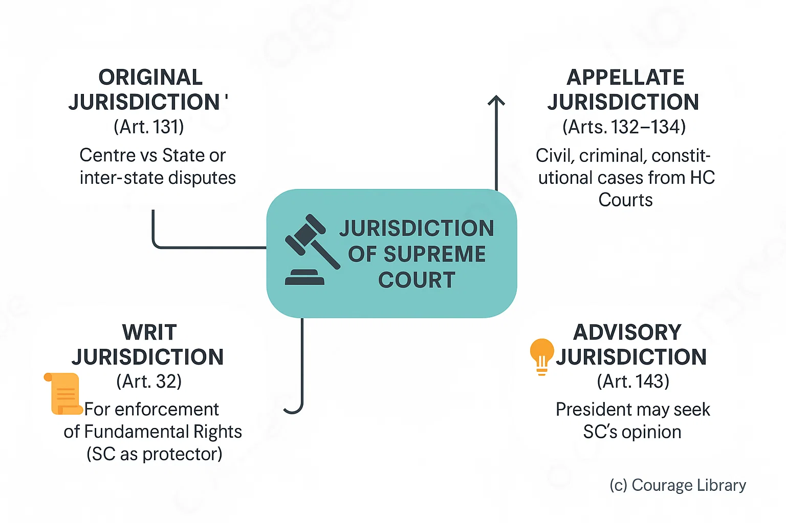
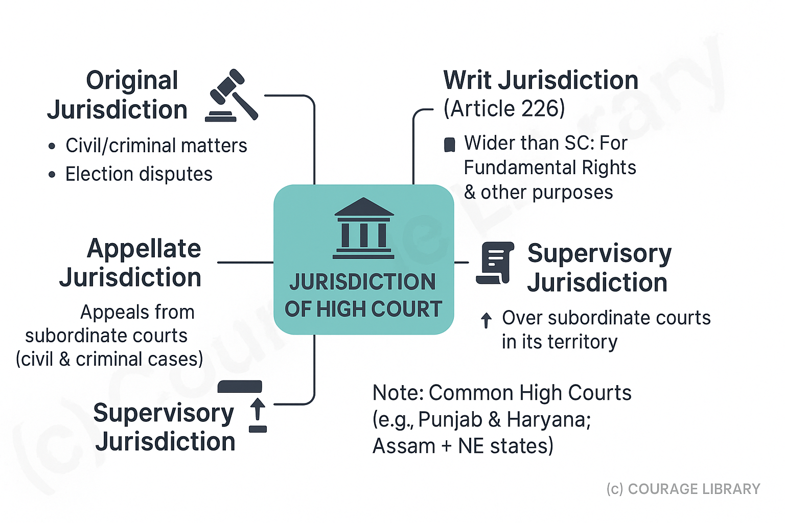

SSC CGL - Detailed Guide 2025
Self-Paced Course
Judiciary
Reference: Lucent GK, NCERT Class 6–12
1. Supreme Court of India
Articles 124 to 147
Apex Court of the country – Guardian of the Constitution
| Feature | Details |
|---|---|
| Established | 28 January 1950 |
| Composition | Chief Justice of India (CJI) + up to 33 Judges |
| Appointment | By President (consulting CJI & senior SC judges) |
| Tenure | Till 65 years of age |
| Removal | By impeachment (proved misbehavior/incapacity under Article 124(4)) |
| Seat | New Delhi (Benches may be set up elsewhere by President) |
Jurisdiction of Supreme Court:
- Original Jurisdiction (Article 131)
• Centre vs State or inter-state disputes - Appellate Jurisdiction (Articles 132–134)
• Civil, criminal, constitutional cases from High Courts - Advisory Jurisdiction (Article 143)
• President may seek SC's opinion - Writ Jurisdiction (Article 32)
• For enforcement of Fundamental Rights (SC as protector)


Judicial Review
- Power to declare laws unconstitutional if inconsistent with the Constitution
- Part of Basic Structure Doctrine (Kesavananda Bharati case, 1973)
Other Powers:
- Court of Record
- Contempt of Court
- Review of its own judgment
- Special Leave Petition (SLP) under Article 136 – Discretionary power to hear any case
Supreme Court is called the "Guardian of the Constitution" and "Protector of Fundamental Rights"
2. High Courts
Articles 214–231
Highest Judicial Body in a State
| Feature | Details |
|---|---|
| Composition | Chief Justice + other judges (no fixed number) |
| Appointment | By President (in consultation with CJI, Governor, and Chief Justice of HC) |
| Tenure | Till 62 years of age |
| Removal | By President in manner similar to SC judges |
| Seat | In state capital (benches in other cities possible) |
Jurisdiction of High Court:
- Original Jurisdiction
• In civil/criminal matters, election disputes - Writ Jurisdiction (Article 226)
• Wider than SC (can issue writs for other purposes, not just FRs) - Appellate Jurisdiction
• Hears appeals from subordinate courts in civil/criminal cases - Supervisory Jurisdiction
• Over all subordinate courts in its territory
Note: Common High Courts exist for some states (e.g., Punjab & Haryana, Assam + NE states)

3. Subordinate Courts
Articles 233–237
Structure varies from state to state, but broadly as:
Hierarchy:
- District Court (Sessions Court for criminal cases)
- Civil Judge (Senior Division) / Chief Judicial Magistrate
- Civil Judge (Junior Division) / Judicial Magistrate
Appointment:
- By Governor in consultation with High Court
- District Judges appointed by Governor (Article 233)
- Others by High Court (Article 234)
Powers:
- Handle civil, criminal, and family disputes
- Bound by decisions of higher courts
Lok Adalats:
- Established under Legal Services Authorities Act, 1987
- For speedy, informal, and low-cost resolution of disputes
- Decision = Final and binding (No appeal)
4. Judicial Activism & PIL (Public Interest Litigation)

Judicial Activism:
- Judiciary proactively interprets the Constitution to protect rights and promote justice
- Expands scope of Fundamental Rights (e.g., Right to Education, Right to Privacy)
- Seen in cases like Vishaka v. State of Rajasthan (sexual harassment), MC Mehta (environment)
Criticism:
- Sometimes seen as judicial overreach (stepping into legislative/executive domain)
Public Interest Litigation (PIL):
| Feature | Details |
|---|---|
| Origin | Started in 1980s by Justice PN Bhagwati & Justice VR Krishna Iyer |
| Filed By | Any public-spirited citizen or NGO |
| Filed Against | Govt. or public authority violating public interest |
| Purpose | To protect rights of disadvantaged groups, ensure justice delivery |
| Article | Filed under Article 32 (SC) or Article 226 (HC) |
Example Cases:
- Environment (Ganga cleaning, air pollution)
- Prisoner rights
- Child labor ban
Developed By Jan Mohammad
Next
Start Your SSC CGL Journey Now!
Join Courage Library to experience disciplined study and expert support.
Be a Couragian!